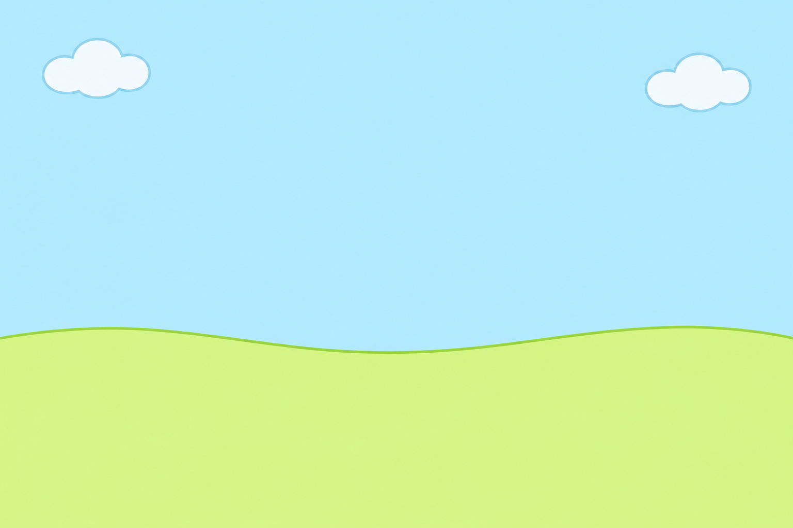

ラせんの タネを さかせよう
さいた 0 / 5 ・ みずやり 0 かい
マイクが使えません
せってい（おとなのひと）
タネ1つが咲くまでの秒数 秒
2の指
高い2は開放弦から長3度上（ラ線ならド♯）、低い2は短3度上（ラ線ならド）。
音の高さの見分けゆるめ
いちばん近い指の音から、ゆるめは90セント、ふつうは60セント、きびしめは40セントまでを、その指の音とみなします。
基準のラ442 Hz
水が出るまでの秒数 秒
音の大きさのしきい値 dB
-70 dB-45-20 dB
メーターが線を越えると音として数えます。レベル1と同じ値を使います。
トレモロの見分けふつう